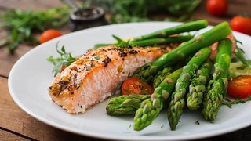

Nutrition Menu
Sample menu of the diet during the week.
It provides less than 50 grams of total carbs per day. However, if you are healthy and active, you can eat more carbs.
| Eating 100 to 150 grams/day | Eating 50 to 100 grams/day | Eating 20 to 50 grams/day> |
| all vegetables | plenty of vegetables | plenty of low carb vegetables |
| several pieces of fruit per day | 2 to 3 pieces of fruit per day | some berries, maybe with whipped cream |
| moderate amounts of healthy starches, like potatoes, sweet potatoes, and healthier grains, like rice and oats | minimal amounts of starchy carbs | trace carbs from other foods, like avocados, nuts, and seeds |